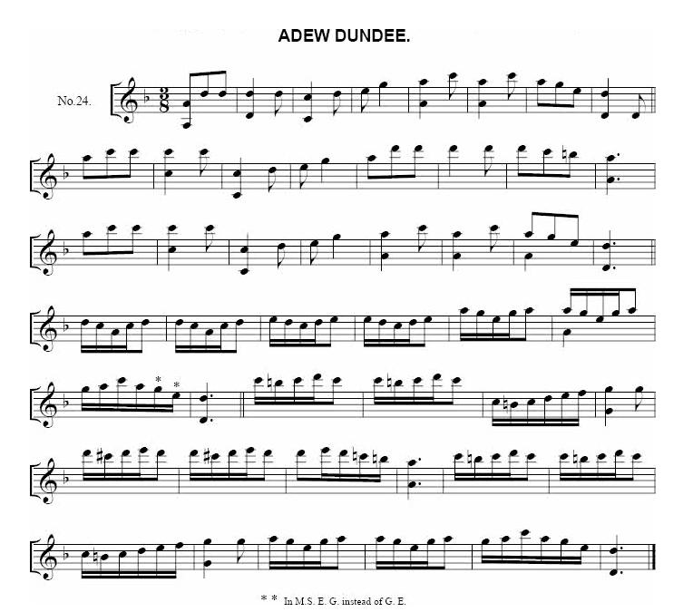
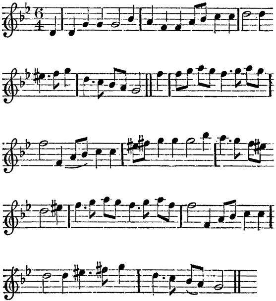
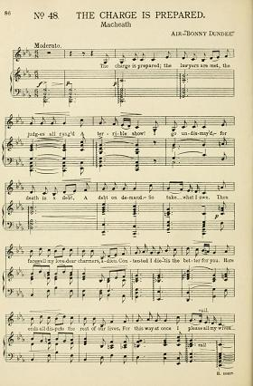
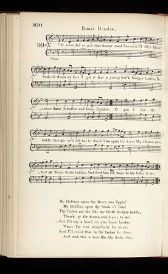

Bonie Dundee
by Robert Burns
from the "Scots Musical Museum", N° 99, Vol 1, Page 100, 1787
followed byThe Scots Callan' of Bonnie Dundee
A broadside song version published c. 1880- 1900,
and the original song "Jockey's Escape from Bonnie Dundee"
Tune - Mélodie"The Scots Callant of Bonnie Dundee"
All songs on this page are sequenced by Christian Souchon
| "Adieu Dundee", "Bonie Dundee" and "Bonny Dundee" are 3 songs inspired by the tune "Adew Dundee" from the Skene MS (c. 1620) and the relating ballad "Jockey's Escape from Dundee" (c. 1710). A variant to the same tune is the vehicle for other Jacobite songs: "There was a Cooper", "Plain Truth", "Fuigheall eile", "Let Misers tremble". Since c. 1840, Sir Walter Scott's composition "Bonny Dundie" is sung to another melody, that of a children's song "Queen Mary", more attuned to it. |
|
To the tune: 1° "Scots Callan' o' Bonnie Dundee" is one of the three songs quoted by Sir Walter Scott in a letter dated December 1825, sent to his daughter Jane to help her identify the tune he meant to accompany his newly composed poem ( see "Bonny Dundee"). The lyrics are slightly different from the version written Robert Burns, published in 1787, in the first volume of Johnson's Musical Museum, under the title "Bonie Dundee". 2° "Plain Truth" is a variant of the same tune set to the songs "Plain truth", "There was a Cooper" and "Let Misers tremble", in James Hogg's "Jacobite Relics", respectively, vol. I n°56, vol. II n°26 and vol. II App. Jac. Songs n°5, also titled "Charlie's Welcome" in Harding's "All Round Collection", N°97, 1905): Plain Truth . However, James Hogg states, concerning this tune: "I do not know anything about the air, or where I first got it. It sounds like an Irish one." It is a matter of fact that two similar jigs may claim an Irish origin: - The Laccarue Boys (from Francis O'Neil's "Dance Music of Ireland" (1907) N°239; - The hearty Boys of Ballymote (from South Sligo). 3° "Jockey's Escape from Dundee" seems to be one of the oldest version of the present song. It appears in the various editions of Thomas D'Urfey's (1653- 1723) "Pills to Purge Melancholy" (e. g. vol. V, p. 17 in the 1719 reprint) with a rather different tune : Jockey's Escape" . The lyrics of the present song are derived from the first verse of this bawdy song, while the chorus inspired Sir Walter Scott with his "Bonny Dundee": Where gottst thou the Haver-mill bonack? Blind Booby canst thou not see? Ise got it out of the Scotch-mans Wallet, As he lig lousing him under a Tree: CHORUS Come fill up my Cup, come fill up my Can, Come Saddle my Horse, and call up my Man; Come open the Gates, and let me go free, And shew me the way to bonny Dundee... As stated in Andrew Kuntz's "Fiddler's companion", the tune itself was first published in the second appendix to the 7th edition of 1686 (printed in 1688) of Henry Playford's Dancing Master. Copies are also in Craig's "Scots Tunes", 1730, 22, and in McGibbon's "Scots Tunes", 1746, 36. There are two songs in the "Merry Muses" for the tune; and Cromek, in his "Scotish Songs" 1810, ii. 207, gives the following as the stanza of an old song : 'Ye're like to the timber o' yon rotten wood, Ye're like to the bark o' yon rotten tree, Ye slip frae me like a knotless thread, An' ye'll crack your credit wi' mae than me.' 4° "Adew Dundee". Several musicologists, G. Farquhar Graham (1848), Kidson (1922) consider the previous tunes to be corrupted versions of "Adew Dundee" found in the 5th part of the Skene Manuscript dating 1615 - 1620, but it is a rather different tune: see "Adieu Dundee". A dance tune derived from it, still a good deal removed from the plain smoothness of the original, is to be found in Oswald's "Caledonian Pocket Companion", 1751, vol. 4. 5° "The Charge is prepared": Another variant of the Skene MS tune appears in John Gay's (1685 -1732) ballad opera, "The Beggar's Opera" performed in 1728: the air N°56, sung by Macheath to the tune of "Bonny Dundee". It is entitled: "The Charge is Prepared" . MACHEATH. "The Charge is prepar'd; the Lawyers are met, The Judges all rang'd (a terrible Show!) I go, undismay'd.--For Death is a Debt, A Debt on Demand.--So take what I owe. Then farewell, my Love--Dear Charmers, adieu. Contented I die--'Tis the better for you. Here ends all Disputes the rest of our Lives, For this way at once I please all my Wives." 6° "The Bonnets of Bonnie Dundee": In fact, Walter Scott's composition is, at least since 1840 - 1850, associated with another melody sung ( and maybe adapted by) the contralto and composer Charlotte Dolby: The Bonnets of Bonnie Dundee". 7° To be exhaustive, a last tune titled "Bonny Dundee" should be listed here. It was published in 1880, in Kerr's "Merry Melodies", vol.4, N°10, page 10. But it is very different from the tunes above. "Bonny Dundee", Reel,1880 . |
 N°4: "Adew Dundee" from the Skene MS, c. 1620 Staff notation by G. Farquhar Graham (1848)  N°3; "Jockey's Escape from Dundee" , from Thomas D'Urfey's "Pills to Purge the Melancholy" 1719 - 1720.  N°5: "The Charge is prepared" Arrangement by Johann-Christoph Prepusch (1667 - 1752) edited for the 1920 performance of the "Beggar's Oper at the Lyric Theatre, Hammersmith.  N°1 "[The Scots Callant of] Bonie Dundee" from the "Scots Musical Museum", volume I, 1787. |
A propos de la mélodie: 1° "Le galant Ecossais de la belle Dundee" est l'un des 3 chants cités par Walter Scott dans sa lettre de décembre 1825 à sa fille Jane pour l'aider à identifier la mélodie pour laquelle il avait composé son nouveau poème (cf. "Bonny Dundee"). Les paroles diffèrent légèrement de la version composée par Robert Burns, publiée, en 1787, dans le 1er volume du Musée Musical de Johnson, sous le titre "Bonie Dundee". 2° "La pure vérité" est une variante qui accompagne les chants "La pure vérité", "Il était un tonnelier", et "Que les avares tremblent", dans les "Reliques Jacobites" de James Hogg's, respectivement, vol. I n°56, vol. II n°26 et vol. II, Annexe Ch.Jac. N°5, intitulée "Bienvenue à Charlie" dans la "All Round Collection" de Harding, N°97, 1905): La pure vérité . James Hogg note à propos de cette mélodie: "Cet air ne me dit rien. Je ne sais pas où je l'ai entendu pour la première fois. On dirait un air irlandais." Il est de fait que deux gigues semblables sont d'origine irlandaise: - The Laccarue Boys (du recueil de Francis O'Neil, "Dance Music of Ireland" (1907) N°239; - The hearty Boys of Ballymote (du sud du comté de Sligo). 3° "Jockey s'échappe de Dundee" semble être l'une des plus anciennes versions du présent chant. On la trouve dans les différentes éditions des "pilules contre la mélancolie" (vol. V, p. 17 dans celle de 1719) avec une mélodie assez différente: Jockey's Escape" . Les paroles du présent chant sont dérivées du premier couplet de cette chanson paillarde, tandis que le refrain a inspiré à Walter Scott son fameux "Bonny Dundee": D'où tiens-tu ce gâteau d'avoine? Sot et aveugle que tu es, ne le vois-tu pas? De la gibecière de l'Ecossais, Qui s'épouillait étendu sous un arbre: REFRAIN Viens remplir ma coupe et remplis ma gourde! Viens seller mon cheval et appelle mon valet! Viens m'ouvrir les portes et laisse-moi aller Et montre-moi le chemin de la Belle Dundee... Comme l'indique Andrew Kuntz dans son "Fiddler's Companion", la mélodie elle-même figure pour la première fois dans l'annexe à la 7ème édition de 1686 (imprimée en 1688) du Maître à Danser de Henry Playford. On en trouve des copies dans les "Mélodies écossaises" de Craig, 1730, 22 et dans celles de McGibbon, 1746, 36. C'est le timbre de 2 chansons des "Joyeuses Muses" et Cromek, dans ses "Chants écossais", 1810, ii, p.207 cite à son sujet ce couplet d'une ancienne chanson: 'Vous comme êtes les arbres au bois pourri. Vous êtes l'écorce de ces arbres pourris. Et comme un fil sans nud vous filez entre mes doigts. Perdant votre crédit auprès d'autres que moi.' 4° "Adew Dundee". Plusieurs musicologues, dont G. Farquhar Graham (1848) et Kidson (1922) voient dans les mélodies qui précèdent des versions dégradées de "Adew Dundee" qui figure dans le manuscrit de Skene datant de 1615 - 1620, même si elle est sensiblement différente: cf. "Adieu Dundee". Une version dansée, encore assez éloignée de la simplicité et du dépouillement de l'original se trouve dans le "Vadémécum calédonien" d'Oswald, 1751, vol. 4. 5° "La plainte est prête": Une autre variante du manuscrit Skene apparaît dans le "ballad opera" de John Gay (1685 - 1732), "l'Opéra du gueux" donné en 1728. C'est l'air n°56 chanté par Macheath sur l'air de "Bonnie Dundee". Il s'intitule: "L'accusation est prête" . MACHEATH. "L'accusation est prête, et les hommes de loi. Les juges ont pris place: un spectacle d'effroi! Je marche sans frayeur: car ma mort vous est due. Prenez ce que je dois: la créance est à vue. Adieu donc, mon amour -- Mes charmantes, adieu! Je vais mourir content - Et pour vous c'est tant mieux. Ceci mettra fin à nos querelles, je crois. Je satisfais toutes mes femmes à la fois." 6° "Les Bonnets de Bonnie Dundee". En réalité, la composition de Walter Scott est associée, vers 1840 - 1850 au plus tard, à une autre mélodie chantée (et peut-être adaptée) par la contralto et compositrice Charlotte Dolby: The Bonnets of Bonnie Dundee" . 7° Pour faire le tour de la question, citons une dernière mélodie "Bonny Dundee", publiée en 1880 par Kerr, dans ses "Merry Melodies", vol. 4, N°10, page 10. Elle se distingue cependant beaucoup des précédentes. "Bonny Dundee", Reel,1880 . |
1° Bonie Dundee
by Robert Burns [1]

|
BONIE DUNDEE 1. O whar did ye get that hauvermeal bannock? [2] O silly blind body, O dinna ye see? I gat it frae a young brisk sodger laddie, Between Saint Johnston and bonie Dundee. O gin I saw the laddie that gae me't! Aft has he doudl'd me upon his knee; May Heaven protect my bonie Scots laddie, And send him safe hame to his babie and me. 2. My blessin's upon thy sweet wee lippie! My blessin's upon thy e'e-brie! Thy smiles are sae like my blythe sodger laddie, Thou's ay the dearer, and dearer to me! But I'll big a bow'r on yon bonie banks, Whare Tay rins wimplin' by sae clear; An' I'll cleed thee in the tartan sae fine, And mak thee a man like thy daddie dear. Source: Scots Musical Museum, Vol 1, 1787 |
NOTRE BELLE DUNDEE 1. - D'où vient le pain d'avoine que voilà, dis-moi? [2] - Es-tu donc aveugle ou sot, ne le vois-tu pas? C'est un jeune et sémillant soldat qui me l'offrit, Entre Saint Johnston et notre belle Dundee. Puissé-je revoir l'homme qui me l'a donné! Lui qui souvent sur ses genoux m'a bercée; Le Ciel protège au loin mon Ecossais charmant, Fasse qu'il rejoigne enfin sa femme et son enfant! 2. O mon cher enfant, que tes lèvres soient bénies! Ma bénédiction descende sur tes sourcils! Mon gai soldat je le vois, quand tu me souris, Je ne t'en aime que plus, mon enfant chéri! Je m'en vais bâtir une ferme au bord de l'eau, Où flâne la Tay en méandres si beaux; Et je te vêtirai d'un tartan qui fera Un homme de toi, comme l'était ton cher papa. (Trad. Ch.Souchon (c) 2006) |
|
[1] As usual, there is some controversy over the authorship of this song. Older commentators believed it to have roots in an English folksong, while modern commentators consider that Burns wrote these lyrics that hint at the Jacobite Rebellion and the resultant exile, voluntary or otherwise, of many Scots. Beside the "Scots Musical Museum" volume 1, N°9, the song appears in Cromek's "Scotish Songs", 1810, ii. 202, and Lawrie's "Scottish Songs", 1799. "Early in 1787, the Earl of Buchan sent a complimentary letter to Burns, who carried it in his pocket for some time, and ultimately used the dingy blank leaf at one of the meetings of the "Crochallan Club" to pencil the opening lines of "Bonie Dundee", which his friend, the physician Dr Robert Cleghorn (1755 - 1821) had just sung. A short time afterwards he sent to the latter the verses above. Stenhouse (see S.M.Museum") says that the first four lines are old; while, according to Scott-Douglas, the first eight lines are in the original song. Neither statement is correct; for only the first two lines of the song are in the original broadside (in the Pepys and other collections), reprinted in D'Urfey's "Pills to Purge Melancholy" , London, 1703 (see note "to the tune", above). D'Urfey's version describes, in ten stanzas, the intrigue of a licentious trooper with a parson's daughter. This song was very popular in England, and was often reprinted... A fragmentary stanza in Herd's "Scots Songs", 1769, iii, is evidently a purified remnant of the song. Sir Walter Scott adapted the chorus in 'Up wi' the bonnets 0' bonnie Dundee'." Source: Burns songs online (see links) [2] Havermeal bannock: In D'Urfey's version of the song the logical link between this stolen bannock and "Jockey's escape" from his liabilities as a "biological father" is unclear, maybe because the song was made up of two different ditties artificially put together. The haver-meal bannock in the original text seems to refer to the "bannock of knaveship", a duty paid to mill servants, taking the form of a certain quantity of meal. A "bannock" is a thick cake usually made of oats or barley meal. The following variant, titled "Scots Callan o' Bonnie Dundee" in this 1898 "broadside", replaces, as did Sir Walter Scott in his "Bonnets of Bonnie Dundee", the "bannock" with a homophonic "blue bonnet". Maybe a Jacobite one. |
[1]Comme c'est souvent le cas, il existe une controverse quant à l'auteur de ce chant. On croyait autrefois qu'il tirait son origine d'un chant populaire anglais. On pense maintenant que c'est Burns qui a écrit ce texte qui évoque la rébellion Jacobite et l'émigration qui s'ensuivit, contrainte ou choisie, de nombreux Ecossais. Outre le "Musée Musical Ecossais", volume I, N°9, ce chant se trouve dans les "Chants écossais", 1810, ii. 202 de Cromek et les "Chants écossais" de Lawrie, 1799. "Au début de 1787, le Comte de Buchan envoya à Burns une lettre de politesse. Celui-ci la conserva dans sa poche un certain temps, avant d'en utiliser la partie vierge lors d'une séance du "Crochallan Club" pour y noter au crayon les premières lignes de "Bonie Dundee", que son ami, le Docteur Robert Cleghorn (1755 - 1821) venait d'interpréter. Peu de temps après, il envoyait à ce dernier, les vers ci-dessus. Stenhouse (cf. "Musée Mus. Ecoss.") affirme que les 4 premières lignes sont anciennes, tandis que, selon Scott-Douglas, ce sont les 8 premières lignes qui constituent le chant original. Les deux ont tort. Seules les 2 premières lignes figurent sur le "broadside" d'origine (dans la collection Pepys, entre autres),et se retrouvent chez d'Urfey dans ses "Pilules contre la mélancolie", Londres,1703 (cf. note "A propos de la mélodie" ci-avant). La version de d'Urfey décrit en 10 couplets les déconvenues d'un cavalier coureur de jupons avec la fille d'un pasteur. Le chant était très populaire en Angleterre et fut souvent réédité... On trouve dans les "Chants écossais" de Herd, 1769, iii, un fragment qui, de toute évidence, est un reste expurgé du même chant. Walter Scott adapta le refrain pour ses "Bonnets de Bonny Dundee'". Source: Burns songs online (see links). [2] Galette d'avoine: Dans la version de D'Urfey le lien logique entre ce vol de galette et la "fuite de Jockey" devant ses responsabilités de "père biologique" est peu évident, peut-être parce qu'elle met bout à bout deux chansons différentes. La galette d'avoine du texte original semble désigner le "bannock of knaveship", un pourboire tarifé dû au personnel d'un moulin, versé sous forme d'une certaine quantité de farine. Le mot "bannock" s'applique à une galette épaisse d'avoine ou de seigle. La variante qui suit, intitulée "Le galant Ecossais de la belle Dundee" dans une feuille volante de 1898, remplace, comme l'a fait Walter Scott dans ses "Bonnets de Bonnie Dundee", le "bannock" par un "bonnet bleu" homophone et peut-être Jacobite. |
2° The Scots Callan' of Bonnie Dundee
|
THE SCOTS CALLAN' O' BONNIE DUNDEE 1. O, whaur gat ye that bonnie blue bonnet, O, silly, blind body, canna' ye see; I gat it frae a bonny Scots callan', 'Atween Saint Johnstone and bonny Dundee. CHORUS. An' 0, gin I saw but the laddie that gae me't, Fu' aft has he dandl'd me upon his knee; But noo he's awa, an' I dinna ken whaur he's, O, gin he was back to his minny an' me. 2. My heart has nae room when I think on my dawty, His dear, rosy haffits bring tears in my e'e; But noo he 's awa', an' I dinna ken whar he 's; Gin we could ance meet we 'se ne'er part till we dee. CHORUS. An' O, gin I saw but my bonnie Scots callan', Fu' aft has he dandl'd me upon his knee But noo he 's awa', an' I dinna ken whaur he's ; O, gin he was back to his minny an' me. Source: Broadside collection of the National Library of Scotland: shelfmark: L.C.Fol.70(119b) - Probable period of publication: 1880-1900 |
LE GALANT ECOSSAIS DE LA BELLE DUNDEE 1. - Dis, d'où te vient le beau bonnet bleu que voilà? - Es-tu donc aveugle ou sot, ne le vois-tu pas? C'est un galant jeune homme écossais qui me l'offrit, Entre Saint Johnston et notre belle Dundee. REFRAIN Puissé-je revoir l'homme qui me l'a donné, Lui qui souvent sur ses genoux m'a bercée! Mais à présent il est loin. Où? Je ne sais pas. Puisse-t-il revenir un jour vers sa mère et moi! 2. Quand je pense à l'aimé mon cur est oppressé, A ses boucles dorées, j'ai les yeux embués! Mais il est au loin, Où-cela? Je ne sais pas. S'il revient, seule la mort, nous séparera! REFRAIN Ah si je revoyais mon galant Ecossais, Lui qui souvent sur ses genoux me berçait! Mais à présent il est loin. Où? Je ne sais pas. Puisse-t-il revenir un jour vers sa mère et moi! (Trad. Ch. Souchon (c) 2010) |
3° The original song: "Jockey's Escape from Dundee"
1. WHere gottst thou the Haver-mill bonack? Blind Booby canst thou not see; Ise got it out of the Scotch-mans Wallet, As he lig lousing him under a Tree: Come fill up my Cup, come fill up my Can, Come Saddle my Horse, and call up my Man; Come open the Gates, and let me go free, And shew me the way to bonny Dundee. 2. For I have neither robbed nor stole, Nor have I done any injury; But I have gotten a Fair Maid with Child, The Ministers Daughter of bonny Dundee: Come fill up my Cup, come fill up my Can, Come saddle my Horse and call up my Man, Come open the Gates and let me go free, And Ise gang no more to bonny Dundee. 3. Altho Ise gotten her Maiden-head, Geud feth Ise given her mine in lieu; For when at her Daddys Ise gang to Bed, Ise mowd her without any more to do? Ise cuddle her close, and gave her a Kiss, Pray tell now where is the harm of this, Then open the Gates and let me go free, And Ise gang no more to bonny Dundee. |
4. All Scotland neer afforded a Lass, So bonny and blith as Jenny my dear; Ise gave her a Gown of Green on the Grass, But now Ise no longer must tarry here: Then saddle my Nag thats bonny and gay, For now it is time to gang hence away, Then open the Gates and let me go free, Shes ken me no more to bonny Dundee. 5. In Liberty still I reckon to Reign, For why I have done no honest Man wrong; The Parson may take his Daughter again, For shell be a Mammy before it is long: And have a young Lad or Lass of my breed, Ise think I have done her a generous deed; Then open the Gates and let me go free, For Ise gang no more to bonny Dundee. 6. Since Jenny the Fair was willing and kind, And came to my Arms with a ready good will; A token of love Ise left her behind, Thus I have requited her kindness still: 19Tho Jenny the Fair I often had mowd, Another may reap the harvest I sowd, Then open the Gates and let me go free, Shes ken me no more to bonny Dundee. 7. Her Daddy would have me to make her my Bride, But have and to hold I neer could endure; From bonny Dundee this Day I will ride, It being a place not safe and secure: Then Jenny farewel my Joy and my dear, With Sword in my Hand the passage Ise clear; Then open the Gates and let me go free, For Ise gang no more to Bonny Dundee. |
8. My Father he is a muckle good Leard, My Mother a Lady bonny and gay; Then while I have strength to handle a Sweard, The Parsons request Ise never obey: Then Sawny my Man be thou of my Mind, In bonny Dundee wese neer be confind, The Gates we will force to set ourselves free, And never come more to bonny Dundee. 9. The Sawny replyd Ise never refuse, To fight for a Leard so valiant and bold; While I have a drop of Blood for to lose, Eer any fickle Loon shall keep us in hold: This Sweard in my Hand Ill valiantly weild, And fight by your side to kill or be killd, For forcing the Gates and set ourselves free, And so bid adieu to bonny Dundee. 10. With Sweard ready drawn they rid to the Gate, Where being denied an Entrance thro The Master and Man they fought at that rate, That some ran away, and others they slew: Thus Jockey the Leard and Sawny the Man, They valiantly fought as Highlanders can, In spight of the Loons they set themselves free, And so bid adieu to bonny Dundee. |